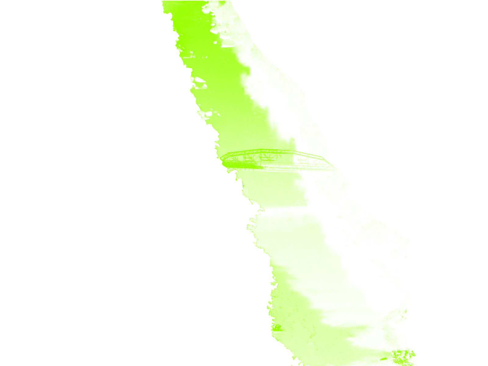

A lot is being written about the current digital environment and what our societal actions within this realm are doing to our collective consciousness.

Those focusing on digital connection are concerned with either the binary between a connected and disconnected existence, or how this new technology seems to be continually weaving within the fabric of our consciousness.1

Less but still relevant, is the focus on how the ubiquitous infrastructure of the web is navigated by those who already understand its “atmospheric presence”

— by which I mean a view that digital culture and technology which are deeply ingrained within our— highly industrialized and global—culture, to the extent that a sort of atmospheric presence has developed through the use of the Internet’s cultural hegemony over the last twenty years.

The cultural aspects of this technology and the current post-digital mentality is defined through the lens of Cultural Anthropology—which believes that through enculturation and socialization, people living in different places often develop different cultures.

It is also important to note that through culture people can adapt to their environment in non-genetic ways.
People living in different environments will often have different cultures.
As Nanjunda suggests: Parallel to the idea of a local cultural development, cultural developments on a global scale are described as “universal human nature, or the web of connections between people in distinct places or circumstances.”
This quote succinctly encompasses my concept and usage of the atmospheric metaphor. Although the Internet is not entirely global yet, it is pretty close to becoming all encompassing and I hold my position on the matter that it has a large enough presence to be placed into that definition of a global presence.
Jurgenson, Nathan. “The IRL Fetish.” The New Inquiry. 2012. Accessed September 23, 2016. http://thenewinquiry.com/essays/the-irl-fetish/.>/p>